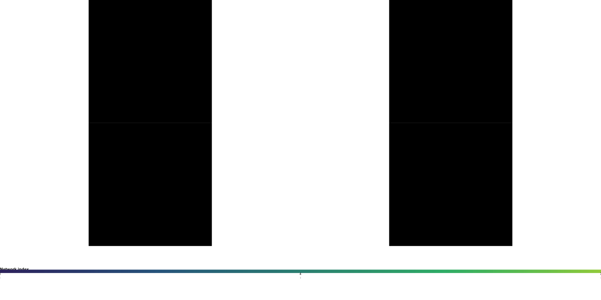

Surfplot-style Figures with neurosurf
neurosurf authors
2026-02-03
Source:vignettes/surfplot-style-figures.Rmd
surfplot-style-figures.RmdThis vignette demonstrates how to go from fsaverage surfaces and Schaefer parcellation labels to a multi-view, publication-ready surface figure using neurosurf’s high-level plotting API.
We will:
- load bundled fsaverage std.8 surfaces;
- load a Schaefer 200-parcel atlas projected to MNI152;
- map parcel means to the surface; and
- add atlas outlines and colourbars to produce a surfplot-style figure.
Load fsaverage std.8 surfaces and Schaefer atlas
The package ships with decimated fsaverage surfaces
(std.8). We will use white and pial surfaces to project the
Schaefer atlas from MNI152 volume space to the surface, and inflated
surfaces for visualization.
# Geometry for plotting
fs_infl <- load_fsaverage_std8("inflated")
#> loading /private/var/folders/9h/nkjq6vss7mqdl4ck7q1hd8ph0000gp/T/Rtmp0Nbniq/temp_libpath80e31f94425b/neurosurf/extdata/std.8_lh.inflated.asc
#> loading /private/var/folders/9h/nkjq6vss7mqdl4ck7q1hd8ph0000gp/T/Rtmp0Nbniq/temp_libpath80e31f94425b/neurosurf/extdata/std.8_rh.inflated.asc
lh <- fs_infl$lh
rh <- fs_infl$rh
# White / pial surfaces for volume-to-surface mapping
lh_white <- read_surf_geometry(
system.file("extdata", "std.8_lh.white.asc", package = "neurosurf")
)
#> loading /private/var/folders/9h/nkjq6vss7mqdl4ck7q1hd8ph0000gp/T/Rtmp0Nbniq/temp_libpath80e31f94425b/neurosurf/extdata/std.8_lh.white.asc
lh_pial <- read_surf_geometry(
system.file("extdata", "std.8_lh.pial.asc", package = "neurosurf")
)
#> loading /private/var/folders/9h/nkjq6vss7mqdl4ck7q1hd8ph0000gp/T/Rtmp0Nbniq/temp_libpath80e31f94425b/neurosurf/extdata/std.8_lh.pial.asc
rh_white <- read_surf_geometry(
system.file("extdata", "std.8_rh.white.asc", package = "neurosurf")
)
#> loading /private/var/folders/9h/nkjq6vss7mqdl4ck7q1hd8ph0000gp/T/Rtmp0Nbniq/temp_libpath80e31f94425b/neurosurf/extdata/std.8_rh.white.asc
rh_pial <- read_surf_geometry(
system.file("extdata", "std.8_rh.pial.asc", package = "neurosurf")
)
#> loading /private/var/folders/9h/nkjq6vss7mqdl4ck7q1hd8ph0000gp/T/Rtmp0Nbniq/temp_libpath80e31f94425b/neurosurf/extdata/std.8_rh.pial.ascFor this example we assume that the Schaefer 200-parcel, 7-network
atlas in MNI152 space is available under inst/extdata. We
use neuroim2 to load the volume and vol_to_surf() to map
parcel labels to the surface vertices.
atlas_path <- system.file(
"extdata",
"Schaefer2018_200Parcels_7Networks_order_FSLMNI152_1mm.nii.gz",
package = "neurosurf"
)
if (atlas_path != "") {
atlas_img <- neuroim2::read_vol(atlas_path)
# Project volume labels to surface vertices (mode of nearby voxels)
lh_labels <- vol_to_surf(lh_white, lh_pial, atlas_img, fun = "mode")
rh_labels <- vol_to_surf(rh_white, rh_pial, atlas_img, fun = "mode")
} else {
warning("Schaefer atlas file not found in extdata; using placeholder zeros for vignette build.")
lh_labels <- NeuroSurface(lh_white, indices = seq_len(length(nodes(lh_white))),
data = integer(length(nodes(lh_white))))
rh_labels <- NeuroSurface(rh_white, indices = seq_len(length(nodes(rh_white))),
data = integer(length(nodes(rh_white))))
}The helper vol_to_surf() returns a
NeuroSurface with per-vertex labels for the mapping
geometry. We extract those labels and reuse them on the inflated
plotting geometry by simple concatenation.
lh_parcels <- lh_labels@data
rh_parcels <- rh_labels@data
# Combine into a single vector for add_surface_layer()
parcel_labels <- c(lh_parcels, rh_parcels)Build a multi-view surface plot
We now construct a neurosurf_plot with a bilaterally
symmetric layout and two views (lateral and
medial). We first add a continuous map (here, the network
index derived from the parcel id) and then overlay the parcel
outlines.
# Derive a simple continuous map: network index from parcel id
network_index <- floor((parcel_labels - 1L) / (200 / 7)) + 1L
network_index[parcel_labels == 0] <- NA_integer_
p <- surface_plot(
lh = lh,
rh = rh,
views = c("lateral", "medial"),
layout = "grid",
zoom = 2.5
)
# Add filled network layer with viridis-like map and a titled colourbar
p <- add_surface_layer(
p,
data = network_index,
cmap = "viridis",
color_range = range(network_index, na.rm = TRUE),
show_colorbar = TRUE,
label = "Network index",
alpha = 0.9
)
# Add parcel outlines with tasteful defaults
p <- add_atlas_outline(
p,
labels = parcel_labels,
label = "Schaefer-200",
outline_offset = 0.5,
outline_lwd = 1.2
)Render a publication-style figure
Finally, we draw the figure with a horizontal colourbar beneath the grid and slightly compressed colourbar height and spacing for a more compact layout.
g <- draw_surface_plot(
p,
colorbar = TRUE,
cbar_location = "bottom",
cbar_kws = list(
n_ticks = 3,
digits = 0,
label_cex = 0.7,
title_cex = 0.9,
bar_height = grid::unit(0.6, "lines"),
bar_spacing = grid::unit(0.4, "lines")
)
)
#> Warning in min(x): no non-missing arguments to min; returning Inf
#> Warning in max(x): no non-missing arguments to max; returning -Inf
#> Warning in rgl::rgl.snapshot(filename = tmpfile): this build of rgl does not
#> support snapshots
#> Warning in min(x): no non-missing arguments to min; returning Inf
#> Warning in max(x): no non-missing arguments to max; returning -Inf
#> Warning in rgl::rgl.snapshot(filename = tmpfile): this build of rgl does not
#> support snapshots
#> Warning in min(x): no non-missing arguments to min; returning Inf
#> Warning in max(x): no non-missing arguments to max; returning -Inf
#> Warning in rgl::rgl.snapshot(filename = tmpfile): this build of rgl does not
#> support snapshots
#> Warning in min(x): no non-missing arguments to min; returning Inf
#> Warning in max(x): no non-missing arguments to max; returning -Inf
#> Warning in rgl::rgl.snapshot(filename = tmpfile): this build of rgl does not
#> support snapshots
grid::grid.newpage()
grid::grid.draw(g)
The resulting figure shows:
- left and right inflated fsaverage surfaces;
- lateral and medial views;
- a continuous network index map with a clean colourbar; and
- crisp parcel outlines with a subtle halo and offset for legibility.
This pattern can be adapted to any surface + atlas combination that
can be loaded into neurosurf as SurfaceGeometry and
per-vertex ROI labels.